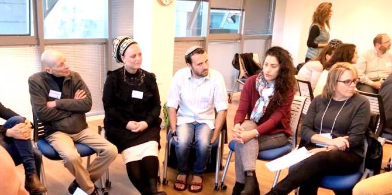

עמיתי התוכנית החברתית והתוכנית האזורית במרכז מנדל בצפון נפגשו עם עמיתי תוכנית המנהיגות של מנדל בצפון ארה"ב, Mandel Executive Leadership Program, בהובלת פרופ' טד ששון. במסגרת תוכנית הלימודים בארה"ב למדו העמיתים על מורכבותה של החברה הישראלית, ומטרת הביקור בארץ הייתה ללמוד יותר לעומק על יחסים בין אוכלוסיות שונות, ולהיחשף לאפשרויות חדשות ולפעילויות ויזומות חברתיות, היוצרות שותפויות והזדמנויות לשינוי חברתי בצפון הארץ.
אחרי מפגש היכרות חווייתי, בפתיחת הסמינר, פגשו האורחים את פרופ' דויד דרי, מנהל מרכז מנדל למנהיגות בצפון, שסיפר על התוכניות ועל דרכי הפעולה של המרכז בצפון, והעלה שאלות המאתגרות פרדיגמות חשיבה סביב סוגיות של שוויון ופריפריה.

בהמשך הסמינר התפצלו העמיתים והאורחים לשתי קבוצות ויצאו ליום למידה משותף בשתי ערים צפוניות בעלות הרכב אוכלוסייה מגוון: עכו ונצרת עילית.
בעכו נערך סיור למידה שבמרכזו היכרות עם העיר והמורכבויות שלה, ההיסטוריה שלה, ומגמות עתידיות שהן הזדמנויות לצמיחה ולשינוי. העמיתים פגשו דמויות מפתח בעיר ונחשפו לפעילות יזמית של עמותת מעשה, המפעילה מועדון נוער מעורב בעיר. בהמשך ניהלו העמיתים והאורחים דיון בשאלות של חיים משותפים של האוכלוסיות השונות בעיר.
בנצרת עילית נפגשו העמיתים עם אנשי הקיבוץ העירוני, המובילים מפגשי תרבות, למידה ושותפויות בנושאים חברתיים, במטרה ליצור קהילה מעורבת ודיאלוג בין האוכלוסיות בעיר. מוקד הפעילות הוא בבית ספר עצמון, שבו הם פועלים כאנשי חינוך וכחלק מהצוות.
בתום הסיורים התקיימו מעגלי שיח ובהם עובדו החוויה והלמידה, ונוסחו שאלות ללמידה עתידית. הסמינר הסתיים בהבעת רצון הדדי להמשך שיתופי פעולה בין המרכזים והתוכניות, בארץ ובארה"ב.
{kind=link}